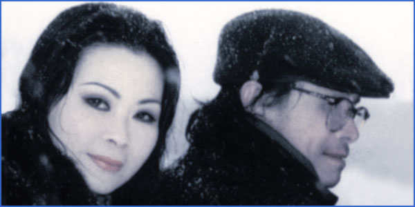

Tôi gọi Trịnh Công Sơn là người thơ ca (Chantre) bởi ở TCS, nhạc và thơ quyện vào nhau đến độ khó phân định cái nào là chính, cái nào là phụ. Và bởi TCS đã hát về quê hương đất nước bằng cả tấm lòng của một đứa con biết vui tận cùng những niềm vui và đau tận cùng những nỗi đau của Tổ quốc mẹ hiền.
Mãi hơn một năm sau ngày 30 tháng 4, chúng tôi mới thật sự mặt nhìn mặt, tay cầm tay lần đầu, nhưng tôi có cảm giác như chúng tôi đã là bạn của nhau từ bao giờ, mặc dù giữa tôi và TCS còn cả một thế hệ đệm. Nói cách nào đó, tôi đã gặp TCS từ những ngày đất nước còn chia hai miền và còn chìm trong khói lửa. Tôi muốn nhắc đến ở đây một kỷ niệm không thể quên ở nhà một người bạn trẻ. Đêm ấy lần đầu tiên tôi nghe (cũng có nghĩa là gặp) Trịnh Công Sơn... Những bạn trẻ hát cho tôi nghe gần suốt đêm hàng loạt ca khúc Trịnh Công Sơn (không biết họ học ở đâu?), hát say sưa đến nỗi đứt cả dây của cây đàn ghi-ta duy nhất trong nhà.
Trong âm nhạc của TCS, ta không thấy dấu vết của âm nhạc cổ điển theo cấu trúc bác học phương Tây. TCS viết hồn nhiên như thể cảm xúc nhạc thơ tự nó trào ra. Nói như nhạc sĩ Nguyễn Xuân Khoát, một người bạn già của tôi, “Trịnh Công Sơn viết dễ như lấy chữ từ trong túi ra". Cái quyến rũ của nhạc Trịnh Công Sơn có lẽ là chính ở chỗ đó, ở chỗ không định tạo ra một trường phái nào, một triết học nào, mà vẫn thấm vào lòng người như suối tưới. Với những lời, ý đẹp và độc đáo đến bất ngờ hôn phối cùng một kết cấu đặc biệt như một hình thức của dân ca hầu như không thay đổi, Trịnh Công Sơn đã chinh phục hàng triệu con tim, không chỉ ở trong nước mà ở cả bên ngoài biên giới. Và nếu tôi không lầm thì dấu ấn của TCS đã ít nhiều in trên các tác phẩm của một số nhạc sĩ thời kỳ sau 1975..
Có lẽ cũng không cần nghe lại nữa, dù bây giờ và sau này TCS có in thêm, một lần là đủ, từ cái đêm chiến tranh ấy, tôi biết mình đã gặp một tâm hồn chị em sẽ chia Một cõi đi về.Và tôi viết lời bạt này cho tập nhạc của TCS như giữ một lời hẹn thầm chưa ngỏ, lời hẹn của một tri âm với tri âm...
Đây là Lời Bạt cho tập sách Trịnh Công Sơn: Em còn nhớ hay em đã quên. Nxb Trẻ 1991. Đầu đề do chúng tôi đặt (BT)